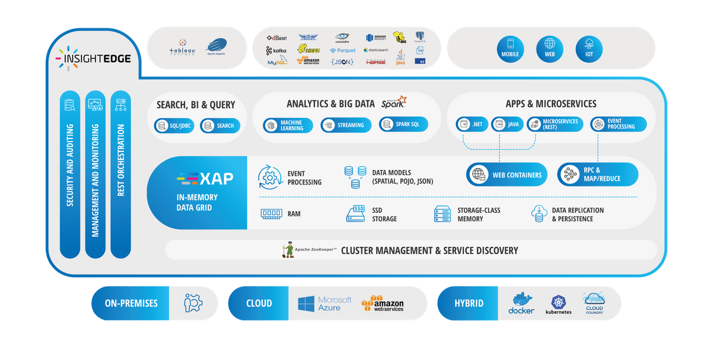

The core in-memory data grid for the
The following is a brief overview of some data grid capabilities.
Data Modeling
API Patterns
Memory and Storage
Data Replication and Persistence
Applications running on the data grid can be scaled out linearly, because the data grid uses the Space-Based Architecture (SBA) as a primary design pattern. With SBA, applications are built out of a set of self-sufficient units, known as Processing Units (PU). These units are completely independent of each other, so that the application can scale indefinitely without increasing complexity, just by adding more units. SBA is based on the Tuple Space paradigm; it follows many of the principles of Service-Oriented Architecture and Event-Driven Architecture, as well as elements of grid computing.
Applications deployed on the data grid are very much like JEE distributed server-side applications. Each application is composed of one or more scalable modules, and contains one or more business logic code components, domain model objects (entries), in-memory data storage, messaging, and event processing code.
A module in SBA is called a Processing Unit. This is the smallest unit for cross-cluster scaling. From a technical standpoint, a Processing Unit is a collection of classes and a configuration file, packaged as a single unit of scale.
Processing Unit:
Java Processing Unit - has code components in Java, and may contain a space component.
.NET Processing Unit - has its code components in .NET, and may contain a space component.
Web Processing Unit - contains web applications. This Processing Unit can be packaged as a standard JEE WAR (Web Archive) file, and may contain a space component.
A Processing Unit package structure is defined, based on the technology:
A Java Processing Unit is packaged usually as a JAR file, modeled after the Spring DI structure. The package can also be within a file structure based on the same structure.
A .NET Processing Unit is packaged as a directory structure. For more information, refer to the
A Web Processing Unit is packaged as a standard JEE WAR file.
The services will usually operate on data that is stored within the same space partition, providing memory access within the same process address space. This mode of interaction allows the minimal latency possible, as data is accessed by reference, as opposed to serialization required for out-of-process communication.
Processing units can be deployed through the GigaSpaces Management Center, Web Management Console, Command Line Interface and REST Manager API.
The
The read-only operations. The purpose of this query engine is to provide business intelligence developers and grid administrators with a mechanism to perform interactive data analysis through vizualization tools (such as: Tableau, QlikView and MicroStrategy).
All components and applications in the platform are managed, deployed, and monitored through a highly available, resilient service discovery that comprises the service grid and Apache ZooKeeper. The combination is responsible for system health monitoring, service discovery, and resource orchestration, as well as other low-level services for scaling your workloads across your data center or cloud.
Enterprise users have several
In addition to the management center, and web and command line interfaces,
